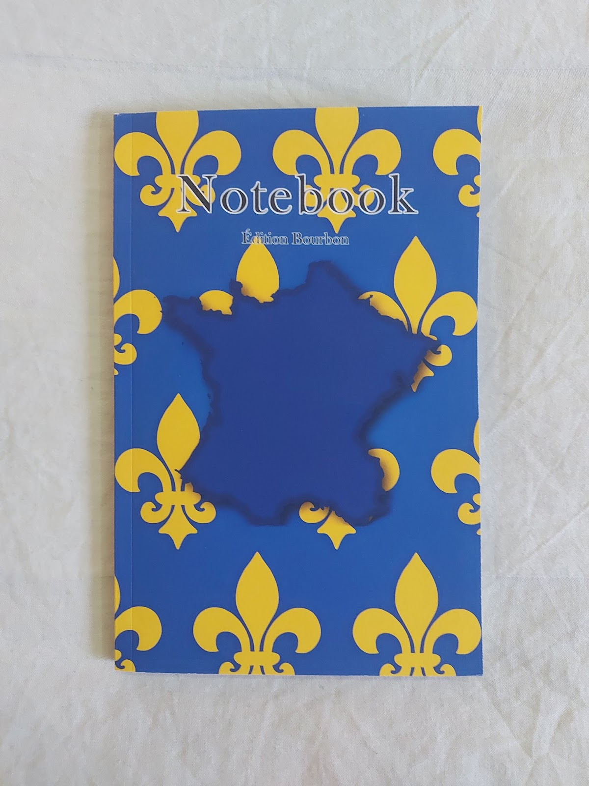
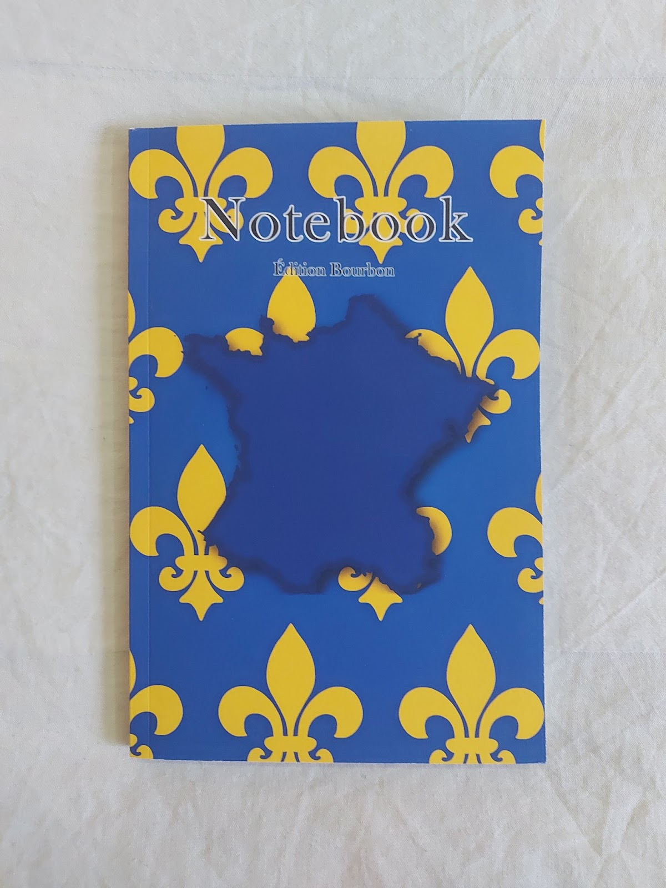
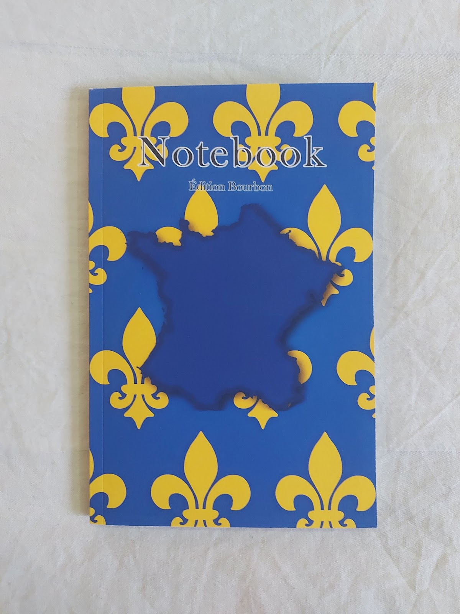

Op 8 oktober 2025 bracht ik mijn eerste boek uit. Dit was een 'proof of concept' product om te ondervinden hoe het was om zelfstandig een boek te publiceren. Dit low-content boek is een notitieblok waarbij elke 10 bladzijdes een pagina gedediceerd is aan een persoon die verwant is aan de geschiedenis van de Bourbon dynastie.
